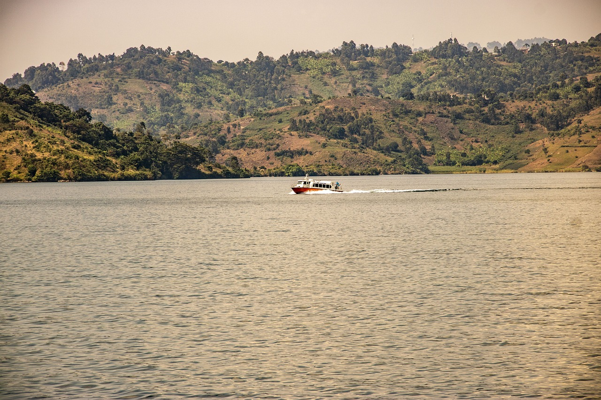

This lively and picturesque lake sits on the border between Rwanda and the Democratic Republic of Congo, consuming nearly half of the Rwandan border itself. The resort town is a great place for swimming and water sport activities, making it an ideal place to relax after your gorilla trek. Over 31 species of fish have been found in the lake. The deep waters of Lake Kivu, are bursting with vast quantities of three dissolved gases - carbon dioxide & hydrogen sulphide (largely from the volcanic activity) and methane (from the lake bed bacteria).
Lake Kivu is home to a diverse range of flora and fauna, including various bird species, fish, and aquatic plants. Birdwatchers will delight in spotting kingfishers, herons, and other waterfowl along the lake's shores.
The best time to visit Lake Kivu is during the dry season, from June to September, when the weather is sunny and rainfall is minimal. This is ideal for outdoor activities and enjoying the beauty of the lake.